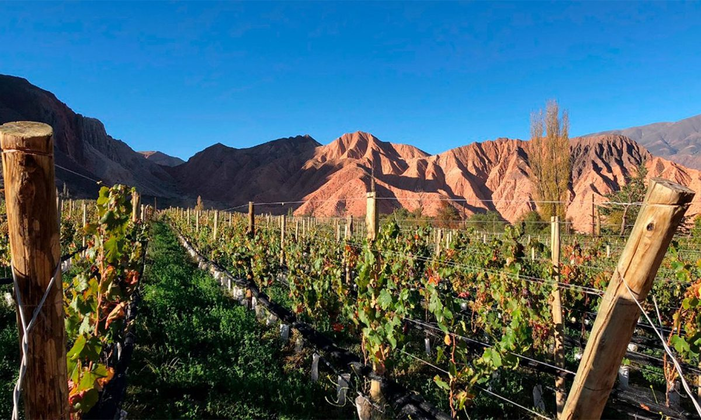
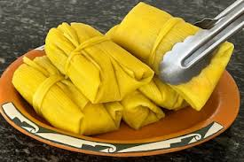

Serranías del Hornocal: El gigante de 14 colores
Un viaje a 4.761 metros sobre el nivel del mar que desafía los sentidos. Descubre cómo llegar a este mirador único en el mundo.
Leer crónica →
Un viaje a 4.761 metros sobre el nivel del mar que desafía los sentidos. Descubre cómo llegar a este mirador único en el mundo.
Leer crónica →
La bajada del Carnaval de Tilcara contada desde adentro.
Carne cortada a cuchillo, papa y el toque jujeño. ¿Cómo hacerlas en casa?

Trekking y fotografías surrealistas en el tercer salar más grande del mundo.

Entrevista a los copleros que mantienen viva la tradición oral en Purmamarca.

Visitamos las bodegas más altas del mundo situadas en plena Quebrada.

Recorrido histórico y natural por la antigua fortaleza omaguaca.

El sacrificio de un pueblo que dejó todo para asegurar la independencia nacional.

Recorremos los mejores puestos de Humahuaca buscando la respuesta definitiva.

El tejido jujeño, una tradición que se transmite de generación en generación.

Un clásico de la cocina andina para los días fríos.

Atrévete a deslizarte por las dunas blancas de la capital del Altiplano Jujeño.
Voces de Viajeros
Excelente nota sobre el Hornocal, Cristian. ¡La grilla quedó impecable!
¿Tienen idea si se puede subir al Hornocal en auto particular o solo excursión?
Las Salinas Grandes son de otro planeta. Muy buena la recomendación del sandboard.
¡Increíble el diseño tipo revista! Me dieron ganas de volver a Jujuy mañana mismo.